Use Windows XP on VMware Workstation Pro
注：下文为个人实际使用状况的整理，仅供参考！使用前请按需修改。
1、下载并安装VMware Workstation Pro
https://www.vmware.com/go/getworkstation-win
https://www.vmware.com/go/getworkstation-linux
当前版本16.2.4：
https://download3.vmware.com/software/WKST-1624-WIN/VMware-workstation-full-16.2.4-20089737.exe
https://download3.vmware.com/software/WKST-1624-LX/VMware-Workstation-Full-16.2.4-20089737.x86_64.bundle
序列号：ZF3R0-FHED2-M80TY-8QYGC-NPKYF
2、下载Windows XP wSP3简体中文版原汁原味VMware虚拟机（下载地址见QQ群104866299共享文件：WinXPwSP3原汁原味VMware虚拟机.txt）
3、打开虚拟机
安装VMware Tools：
VM-->Install VMware Tools
开启共享文件夹：
VM-->Settings-->Options-->Shared Folders-->选中Always enabled和Map as a network drive in Windows guests
点击“Add”，Name填写VM，点击“Browse for Host Path选择要共享的Host Path。
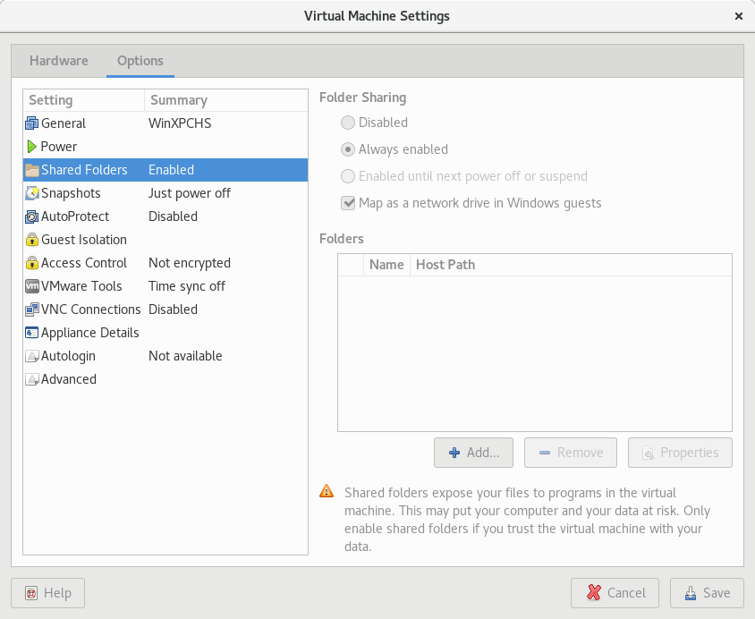
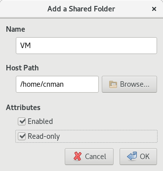
软件可以下载到主机的共享文件夹，虚拟机中Z:盘可以直接使用，避免下载到虚拟机中占用空间。
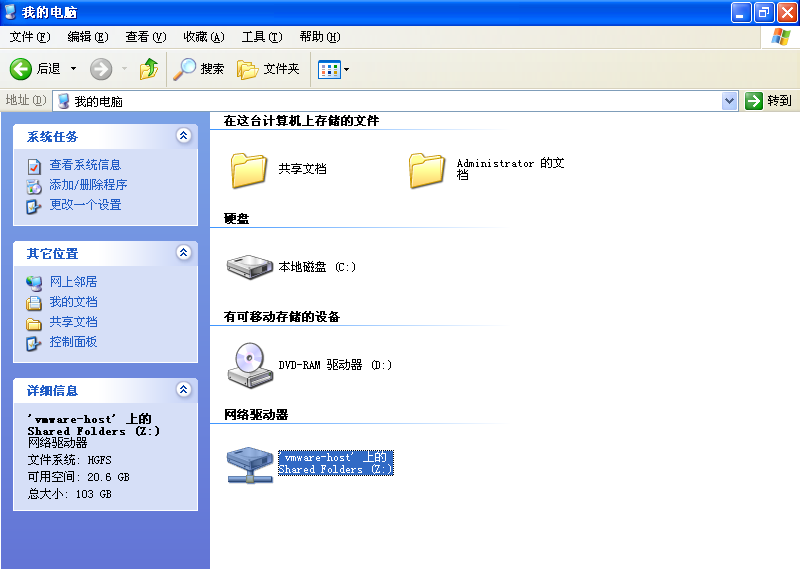
4、更新系统证书
下载
updroots.zip，右键“提取文件”，运行rootsupd.cmd。
5、安装截止2019年4月的Windows XP补丁
参考：
https://github.com/CNMan/MicrosoftHotfixesList/tree/master/winxp_with_sp3_x86/install_chs
安装时间很长（我大概记得用了10来个小时），可以找个空闲时间慢慢搞
6、安装Visual C++ Redistributable Runtimes
可从官方分开下载安装：
https://github.com/CNMan/WindowsSoftwaresDownload/blob/master/VC++.txt
亦可用abbodi1406打包的一次性安装包：
https://github.com/abbodi1406/vcredist/releases/download/v0.35.0/VisualCppRedist_AIO_x86_XP_35.zip
7、安装Microsoft Office 2010及SP2补丁
https://cnman.github.io/office.html#o2010
剩余补丁可参考
https://github.com/CNMan/MicrosoftHotfixesList/blob/master/office_project_visio_2010/Office2010-x86.xml
8、安装Adobe Reader 11或Adobe Acrobat 11
https://github.com/CNMan/WindowsSoftwaresDownload/blob/master/Adobe.txt
9、安装杀毒软件
可安装Kaspersky Endpoint Security 10 SP1 MR4或ESET Endpoint Antivirus/ESET Endpoint Security 6.5.2132.6
https://github.com/CNMan/WindowsSoftwaresDownload/blob/master/Kaspersky.txt
https://github.com/CNMan/WindowsSoftwaresDownload/blob/master/ESET.txt
安全模式下运行卡巴斯基更新补丁：kes10sp1mr4_update_patch.reg
Windows Registry Editor Version 5.00
[HKEY_LOCAL_MACHINE\SOFTWARE\KasperskyLab\protected\KES10SP1\environment]
"Build"="304"
"Ins_ProductVersion"="10.3.3.275"
"ProductHotfix"="mr3.mr4_aes256"
"ProductVersion"="10.3.3.275"
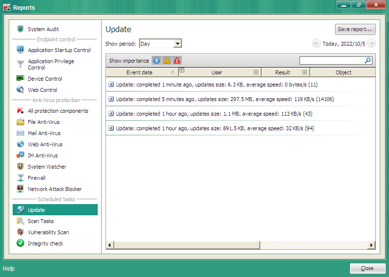
新增一块新磁盘，以备安装其他绿色软件。
重新开机，开始-->控制面板-->性能和维护-->管理工具-->计算机管理-->存储-->磁盘管理，初始化磁盘，格式化磁盘，盘符大概应该是E:，新建E:\PathFile和E:\VMware两个文件夹（后续我的批处理脚本要用到）。
快捷方式：运行compmgmt.msc
部分常规设置：
回收站-->属性-->选中“所有驱动器均使用同一设置”和“删除时不将文件移入回收站，而是彻底删除”
开始-->控制面板-->安全中心-->更改“安全中心”通知我的方式-->取消选中“防火墙”、“自动更新”和“病毒保护”
开始-->控制面板-->安全中心-->Internet 选项-->常规-->主页-->使用空白页
开始-->控制面板-->安全中心-->Internet 选项-->常规-->Internet 临时文件-->设置-->“使用的磁盘空间”设为250MB
开始-->控制面板-->安全中心-->Internet 选项-->常规-->历史记录-->“网页保存在历史记录中的天数”设为0天并点击“清除历史记录”
开始-->控制面板-->安全中心-->自动更新-->选中“关闭自动更新”
开始-->控制面板-->安全中心-->Windows 防火墙-->常规-->选中“关闭（不推荐）”
开始-->控制面板-->性能和维护-->系统-->高级-->错误报告-->选中“禁用错误汇报”
开始-->控制面板-->性能和维护-->系统-->系统还原-->选中“关闭系统还原”
开始-->控制面板-->性能和维护-->系统-->远程-->取消选中“允许从这台计算机发送远程协助邀请”
开始-->控制面板-->外观和主题-->显示-->外观-->效果-->“使用下列方式使屏幕字体的边缘平滑”选中“清晰”
开始-->控制面板-->外观和主题-->文件夹选项-->查看-->选中“显示系统文件夹的内容”，取消选中“隐藏受保护的操作系统文件（推荐）”和“隐藏已知文件类型的扩展名”，“隐藏文件和文件夹”选中“显示所有文件和文件夹”
开始-->控制面板-->外观和主题-->任务栏和[开始]菜单-->任务栏-->选中“显示快速启动”、取消选中“隐藏不活动的图标”
开始-->控制面板-->外观和主题-->[开始]菜单-->自定义-->常规-->为程序选择一个图标大小-->选中“小图标”
开始-->控制面板-->外观和主题-->[开始]菜单-->自定义-->常规-->程序-->点击“清除列表”
开始-->控制面板-->外观和主题-->[开始]菜单-->自定义-->高级-->最近使用的文档-->取消选中“列出我最近打开的文档”并点击“清除列表”
部分通过注册表设置：如关机清理虚拟内存页面文件、清理[开始]菜单等
ClearType_CHS.reg
Windows Registry Editor Version 5.00
[HKEY_CURRENT_USER\Control Panel\Desktop]
"FontSmoothing"="2"
"FontSmoothingOrientation"=dword:00000001
"FontSmoothingType"=dword:00000002
[HKEY_USERS\.DEFAULT\Control Panel\Desktop]
"FontSmoothing"="2"
"FontSmoothingOrientation"=dword:00000001
"FontSmoothingType"=dword:00000002
[HKEY_USERS\S-1-5-18\Control Panel\Desktop]
"FontSmoothing"="2"
"FontSmoothingOrientation"=dword:00000001
"FontSmoothingType"=dword:00000002
[HKEY_USERS\S-1-5-19\Control Panel\Desktop]
"FontSmoothing"="2"
"FontSmoothingOrientation"=dword:00000001
"FontSmoothingType"=dword:00000002
[HKEY_USERS\S-1-5-20\Control Panel\Desktop]
"FontSmoothing"="2"
"FontSmoothingOrientation"=dword:00000001
"FontSmoothingType"=dword:00000002
[HKEY_USERS\S-1-5-21-1957994488-2000478354-682003330-500\Control Panel\Desktop]
"FontSmoothing"="2"
"FontSmoothingOrientation"=dword:00000001
"FontSmoothingType"=dword:00000002
Configuration.reg
Windows Registry Editor Version 5.00
[HKEY_CURRENT_USER\Software\Microsoft\Internet Explorer\Main]
"Default_Page_URL"="about:blank"
"Start Page"="about:blank"
[HKEY_CURRENT_USER\Software\Microsoft\Windows\CurrentVersion\Explorer]
"DesktopProcess"=dword:00000001
"EnableAutoTray"=dword:00000000
"link"=hex:00,00,00,00
"ShowDriveLettersFirst"=dword:00000004
[HKEY_CURRENT_USER\Software\Microsoft\Windows\CurrentVersion\Explorer\Advanced]
"AlwayShowMenus"=dword:00000000
"CascadeControlPanel"=dword:00000000
"CascadeMyDocuments"=dword:00000000
"CascadeMyPictures"=dword:00000000
"CascadeNetworkConnections"=dword:00000000
"CascadePrinters"=dword:00000000
"ClassicViewState"=dword:00000001
"DisableThumbnailCache"=dword:00000001
"DontPrettyPath"=dword:00000000
"EnableBalloonTips"=dword:00000000
"ExtendedUIHoverTime"=dword:00000000
"Filter"=dword:00000000
"FolderContentsInfoTip"=dword:00000000
"FriendlyTree"=dword:00000000
"Hidden"=dword:00000001
"HideFileExt"=dword:00000000
"HideIcons"=dword:00000000
"IconsOnly"=dword:00000000
"IntelliMenus"=dword:00000000
"ListviewAlphaSelect"=dword:00000000
"ListviewShadow"=dword:00000000
"ListviewWatermark"=dword:00000000
"MapNetDrvBtn"=dword:00000000
"NoNetCrawling"=dword:00000001
"PersistBrowsers"=dword:00000000
"SeparateProcess"=dword:00000000
"ServerAdminUI"=dword:00000000
"SharingWizardOn"=dword:00000000
"ShowCompColor"=dword:00000000
"ShowInfoTip"=dword:00000000
"ShowPreviewHandlers"=dword:00000000
"ShowSuperHidden"=dword:00000001
"ShowTypeOverlay"=dword:00000000
"Start_AdminToolsRoot"=dword:00000000
"Start_AdminToolsTemp"=dword:00000000
"Start_AutoCascade"=dword:00000000
"Start_EnableDragDrop"=dword:00000000
"Start_LargeIcons"=dword:00000000
"Start_LargeMFUIcons"=dword:00000000
"Start_MinMFU"=dword:00000000
"Start_NotifyNewApps"=dword:00000000
"Start_ScrollPrograms"=dword:00000000
"Start_ShowControlPanel"=dword:00000001
"Start_ShowHelp"=dword:00000000
"Start_ShowMyComputer"=dword:00000001
"Start_ShowMyDocs"=dword:00000000
"Start_ShowMyMusic"=dword:00000000
"Start_ShowMyPics"=dword:00000000
"Start_ShowNetConn"=dword:00000000
"Start_ShowNetPlaces"=dword:00000000
"Start_ShowOEMLink"=dword:00000000
"Start_ShowPrinters"=dword:00000000
"Start_ShowRecentDocs"=dword:00000000
"Start_ShowRun"=dword:00000001
"Start_ShowSearch"=dword:00000000
"Start_ShowSetProgramAccessAndDefaults"=dword:00000000
"Start_TrackProgs"=dword:00000000
"StartButtonBalloonTip"=dword:00000000
"StartMenuAdminTools"=dword:00000000
"StartMenuChange"=dword:00000000
"StartMenuFavorites"=dword:00000000
"StartMenuInit"=dword:00000000
"StartMenuLogoff"=dword:00000000
"StartMenuRun"=dword:00000000
"StartMenuScrollPrograms"=dword:00000000
"StartShowRun"=dword:00000000
"SuperHidden"=dword:00000000
"TaskbarAnimations"=dword:00000000
"TaskbarGlomming"=dword:00000000
"TaskbarSizeMove"=dword:00000000
"TypeAhead"=dword:00000000
"UseCheckBoxes"=dword:00000000
"WebView"=dword:00000000
"WebViewBarricade"=dword:00000000
[HKEY_CURRENT_USER\Software\Microsoft\Windows\CurrentVersion\Explorer\CabinetState]
"FullPath"=dword:00000001
"FullPathAddress"=dword:00000001
[HKEY_CURRENT_USER\Software\Microsoft\Windows\CurrentVersion\Explorer\Desktop\CleanupWiz]
"NoRun"=dword:00000001
[HKEY_CURRENT_USER\Software\Microsoft\Windows\CurrentVersion\Internet Settings]
"MaxConnectionsPer1_0Server"=dword:0000000a
"MaxConnectionsPerServer"=dword:0000000a
[HKEY_CURRENT_USER\Software\Microsoft\Windows\CurrentVersion\Explorer\StartPage]
"Favorites"=hex:00,00,00,00,00,00,00,00
"FavoritesChanges"=dword:00000009
"FavoritesResolve"=hex:00,00,00,00,00,00,00,00
"ProgramsCache"=hex:00,00,00,00,00,00,00,00
"StartMenu_Balloon_Time"=hex:00,00,00,00,00,00,00,00
"StartMenu_Start_Time"=hex:00,00,00,00,00,00,00,00
[HKEY_CURRENT_USER\Software\Microsoft\Windows\CurrentVersion\Explorer\tips]
"Show"=dword:00000000
[HKEY_CURRENT_USER\Software\Microsoft\Windows\CurrentVersion\Explorer\TrayNotify]
"BalloonTip"=dword:00000000
[HKEY_LOCAL_MACHINE\SOFTWARE\Microsoft\Dfrg\BootOptimizeFunction]
"Enable"="N"
[HKEY_LOCAL_MACHINE\SOFTWARE\Microsoft\Internet Explorer\Main\FeatureControl\FEATURE_MAXCONNECTIONSPER1_0SERVER]
"iexplore.exe"=dword:0000000a
[HKEY_LOCAL_MACHINE\SOFTWARE\Microsoft\Internet Explorer\Main\FeatureControl\FEATURE_MAXCONNECTIONSPERSERVER]
"iexplore.exe"=dword:0000000a
[HKEY_LOCAL_MACHINE\SOFTWARE\Microsoft\PCHealth\ErrorReporting]
"DoReport"=dword:00000000
"ShowUI"=dword:00000000
[HKEY_LOCAL_MACHINE\SOFTWARE\Microsoft\Security Center]
"AntiVirusDisableNotify"=dword:00000001
"AntiVirusOverride"=dword:00000000
"FirewallDisableNotify"=dword:00000001
"FirewallOverride"=dword:00000000
"FirstRunDisabled"=dword:00000001
"UpdatesDisableNotify"=dword:00000001
[HKEY_LOCAL_MACHINE\SOFTWARE\Microsoft\Windows\CurrentVersion\Explorer]
"Max Cached Icons"="4096"
[HKEY_LOCAL_MACHINE\SOFTWARE\Microsoft\Windows\CurrentVersion\OptimalLayout]
"EnableAutoLayout"=dword:00000000
[HKEY_LOCAL_MACHINE\SOFTWARE\Microsoft\Windows\CurrentVersion\Policies\Explorer]
"AllowOnlineTips"=dword:00000000
"AlwaysShowClassicMenu"=dword:00000000
"ClassicShell"=dword:00000000
"ClearRecentDocsOnExit"=dword:00000001
"ClearRecentProgForNewUserInStartMenu"=dword:00000001
"ClearTilesOnExit"=dword:00000001
"ConfirmFileDelete"=dword:00000001
"DisableBindDirectlyToPropertySetStorage"=dword:00000001
"DisableCurrentUserRun"=dword:00000000
"DisableCurrentUserRunOnce"=dword:00000000
"DisableLocalMachineRun"=dword:00000000
"DisableLocalMachineRunOnce"=dword:00000000
"DisablePersonalDirChange"=dword:00000001
"DisableThumbnails"=dword:00000001
"DisableThumbnailsOnNetworkFolders"=dword:00000001
"DontSetAutoplayCheckbox"=dword:00000000
"EnforceShellExtensionSecurity"=dword:00000000
"ForceActiveDesktopOn"=dword:00000000
"ForceClassicControlPanel"=dword:00000000
"ForceRunOnStartMenu"=dword:00000000
"ForceStartMenuLogOff"=dword:00000000
"GreyMSIAds"=dword:00000001
"HideClock"=dword:00000001
"HidePeopleBar"=dword:00000001
"HidePowerOptions"=dword:00000000
"HideSCAHealth"=dword:00000001
"HideSCAMeetNow"=dword:00000001
"HideSCANetwork"=dword:00000001
"HideSCAPower"=dword:00000001
"HideSCAVolume"=dword:00000001
"Intellimenus"=dword:00000001
"LinkResolveIgnoreLinkInfo"=dword:00000001
"LockTaskbar"=dword:00000001
"MaxRecentDocs"=dword:00000000
"MemCheckBoxInRunDlg"=dword:00000000
"NoActiveDesktop"=dword:00000001
"NoActiveDesktopChanges"=dword:00000001
"NoAddPrinter"=dword:00000000
"NoAutorun"=dword:00000001
"NoAutoTrayNotify"=dword:00000001
"NoAutoUpdate"=dword:00000001
"NoBalloonFeatureAdvertisements"=dword:00000001
"NoBandCustomize"=dword:00000001
"NoCDBurning"=dword:00000001
"NoChangeAnimation"=dword:00000001
"NoChangeKeyboardNavigationIndicators"=dword:00000001
"NoChangeStartMenu"=dword:00000001
"NoClose"=dword:00000000
"NoCloseDragDropBands"=dword:00000001
"NoCommonGroups"=dword:00000001
"NoComputersNearMe"=dword:00000001
"NoControlPanel"=dword:00000000
"NoDeletePrinter"=dword:00000000
"NoDesktop"=dword:00000001
"NoDesktopCleanupWizard"=dword:00000001
"NoDFSTab"=dword:00000001
"NoDisconnect"=dword:00000001
"NoDriveAutoRun"=dword:00000008
"NoDrives"=dword:00000000
"NoDriveTypeAutoRun"=dword:000000ff
"NoEncryptOnMove"=dword:00000001
"NoFavoritesMenu"=dword:00000001
"NoFileMenu"=dword:00000001
"NoFind"=dword:00000001
"NoFolderOptions"=dword:00000001
"NoHardwareTab"=dword:00000001
"NoInplaceSharing"=dword:00000001
"NoInstrumentation"=dword:00000001
"NoInternetIcon"=dword:00000001
"NoInternetOpenWith"=dword:00000001
"NoLogoff"=dword:00000001
"NoLowDiskSpaceChecks"=dword:00000001
"NoManageMyComputerVerb"=dword:00000001
"NoMovingBands"=dword:00000001
"NoMSAppLogo5ChannelNotify"=dword:00000001
"NoNetConnectDisconnect"=dword:00000001
"NoNetHood"=dword:00000001
"NoNetworkConnections"=dword:00000001
"NoNTSecurity"=dword:00000001
"NoOEMLinkInstalled"=dword:00000001
"NoOnlinePrintsWizard"=dword:00000001
"NoPreviewPane"=dword:00000001
"NoPropertiesMyComputer"=dword:00000000
"NoPropertiesMyDocuments"=dword:00000001
"NoPropertiesRecycleBin"=dword:00000001
"NoPublishingWizard"=dword:00000001
"NoReadingPane"=dword:00000001
"NoRecentDocsHistory"=dword:00000001
"NoRecentDocsMenu"=dword:00000001
"NoRecentDocsNetHood"=dword:00000001
"NoRecycleFiles"=dword:00000001
"NoResolveSearch"=dword:00000001
"NoResolveTrack"=dword:00000001
"NoRun"=dword:00000000
"NoRunasInstallPrompt"=dword:00000000
"NoSaveSettings"=dword:00000001
"NoSearchCommInStartMenu"=dword:00000001
"NoSearchComputerLinkInStartMenu"=dword:00000001
"NoSearchEverywhereLinkInStartMenu"=dword:00000001
"NoSearchFilesInStartMenu"=dword:00000001
"NoSearchInternetInStartMenu"=dword:00000001
"NoSearchProgramsInStartMenu"=dword:00000001
"NoSecurityTab"=dword:00000001
"NoSetFolders"=dword:00000001
"NoSetTaskbar"=dword:00000001
"NoSharedDocuments"=dword:00000001
"NoShellSearchButton"=dword:00000001
"NoSimpleNetIDList"=dword:00000001
"NoSimpleStartMenu"=dword:00000000
"NoSMBalloonTip"=dword:00000001
"NoSMConfigurePrograms"=dword:00000001
"NoSMHelp"=dword:00000001
"NoSMMyDocs"=dword:00000001
"NoSMMyPictures"=dword:00000001
"NoStartBanner"=dword:00000001
"NoStartMenuDownloads"=dword:00000001
"NoStartMenuEjectPC"=dword:00000001
"NoStartMenuHomegroup"=dword:00000001
"NoStartMenuMFUprogramsList"=dword:00000001
"NoStartMenuMorePrograms"=dword:00000001
"NoStartMenuMyGames"=dword:00000001
"NoStartMenuMyMusic"=dword:00000001
"NoStartMenuNetworkPlaces"=dword:00000001
"NoStartMenuPinnedList"=dword:00000001
"NoStartMenuRecordedTV"=dword:00000001
"NoStartMenuSubFolders"=dword:00000001
"NoStartMenuVideos"=dword:00000001
"NoStrCmpLogical"=dword:00000001
"NoSystraySystemPromotion"=dword:00000001
"NoTaskGrouping"=dword:00000001
"NoThemesTab"=dword:00000001
"NoThumbnailCache"=dword:00000001
"NoToolbarCustomize"=dword:00000001
"NoToolbarsOnTaskbar"=dword:00000000
"NoTrayContextMenu"=dword:00000001
"NoTrayItemsDisplay"=dword:00000000
"NoUserFolderInStartMenu"=dword:00000001
"NoUserNameInStartMenu"=dword:00000001
"NoViewContextMenu"=dword:00000001
"NoViewOnDrive"=dword:00000000
"NoWebServices"=dword:00000001
"NoWelcomeScreen"=dword:00000001
"NoWindowsUpdate"=dword:00000001
"NoWinKeys"=dword:00000000
"PreventItemCreationInUsersFilesFolder"=dword:00000000
"PreXPSP2ShellProtocolBehavior"=dword:00000000
"PromptRunasInstallNetPath"=dword:00000000
"QuickLaunchEnabled"=dword:00000001
"RecycleBinSize"=dword:00000000
"RestrictRun"=dword:00000000
"RestrictWelcomeCenter"=dword:00000000
"StartMenuLogOff"=dword:00000000
"TaskbarLockAll"=dword:00000001
"TaskbarNoAddRemoveToolbar"=dword:00000001
"TaskbarNoDragToolbar"=dword:00000001
"TaskbarNoNotification"=dword:00000001
"TaskbarNoRedock"=dword:00000001
"TaskbarNoResize"=dword:00000001
"TaskbarNoThumbnail"=dword:00000001
"TurnOffSPIAnimations"=dword:00000001
"UseDefaultTile"=dword:00000001
[HKEY_LOCAL_MACHINE\SOFTWARE\Microsoft\Windows\CurrentVersion\WindowsUpdate\Auto Update]
"AUOptions"=dword:00000001
[HKEY_LOCAL_MACHINE\SOFTWARE\Microsoft\Windows NT\CurrentVersion\AeDebug]
"Auto"="0"
[HKEY_LOCAL_MACHINE\SOFTWARE\Microsoft\Windows NT\CurrentVersion\Winlogon]
"AllowMultipleTSSessions"=dword:00000000
"AutoRestartShell"=dword:00000001
[HKEY_LOCAL_MACHINE\SYSTEM\CurrentControlSet\Control]
"WaitToKillServiceTimeout"="5000"
[HKEY_LOCAL_MACHINE\SYSTEM\CurrentControlSet\Control\CrashControl]
"AutoReboot"=dword:00000000
[HKEY_LOCAL_MACHINE\SYSTEM\CurrentControlSet\Control\FileSystem]
"DisableDeleteNotification"=dword:00000000
"NtfsDisableLastAccessUpdate"=dword:00000001
[HKEY_LOCAL_MACHINE\System\CurrentControlSet\Control\LSA]
"EveryoneIncludesAnonymous"=dword:00000000
"ForceGuest"=dword:00000000
"RestrictAnonymous"=dword:00000001
"RestrictAnonymousSAM"=dword:00000001
"TurnOffAnonymousBlock"=dword:00000000
[HKEY_LOCAL_MACHINE\SYSTEM\CurrentControlSet\Control\PriorityControl]
"Win32PrioritySeparation"=dword:00000026
[HKEY_LOCAL_MACHINE\SYSTEM\CurrentControlSet\Control\SecurePipeServers\winreg]
"RemoteRegAccess"=dword:00000001
[HKEY_LOCAL_MACHINE\SYSTEM\CurrentControlSet\Control\Session Manager]
"AutoChkTimeOut"=dword:00000005
[HKEY_LOCAL_MACHINE\SYSTEM\CurrentControlSet\Control\Session Manager\Environment]
"DEVMGR_SHOW_NONPRESENT_DEVICES"="1"
[HKEY_LOCAL_MACHINE\SYSTEM\CurrentControlSet\Control\Session Manager\Memory Management]
"ClearPageFileAtShutdown"=dword:00000001
"DisablePagingExecutive"=dword:00000001
"IoPageLockLimit"=dword:08000000
[HKEY_LOCAL_MACHINE\SYSTEM\CurrentControlSet\Control\Session Manager\Memory Management\PrefetchParameters]
"EnablePrefetcher"=dword:00000000
[HKEY_LOCAL_MACHINE\SYSTEM\CurrentControlSet\Control\Terminal Server]
"fAllowToGetHelp"=dword:00000000
[HKEY_LOCAL_MACHINE\SYSTEM\CurrentControlSet\Control\Update]
"UpdateMode"=dword:00000000
[HKEY_LOCAL_MACHINE\SYSTEM\CurrentControlSet\Services\CDRom]
"AutoRun"=dword:00000000
[HKEY_LOCAL_MACHINE\SYSTEM\CurrentControlSet\Services\Dnscache\Parameters]
"MaxCacheEntryTtlLimit"=dword:00002a30
"MaxCacheTtl"=dword:00002a30
"MaxNegativeCacheTtl"=dword:00000000
"NegativeSOACacheTime"=dword:00000000
"NetFailureCacheTime"=dword:00000000
[HKEY_LOCAL_MACHINE\SYSTEM\CurrentControlSet\Services\LanmanWorkstation\Parameters]
"MaxCmds"=dword:0000001e
"MaxCollectionCount"=dword:00000020
"MaxThreads"=dword:0000001e
[HKEY_LOCAL_MACHINE\SYSTEM\CurrentControlSet\Services\SharedAccess\Parameters\FirewallPolicy\StandardProfile]
"EnableFirewall"=dword:00000000
[HKEY_LOCAL_MACHINE\SYSTEM\CurrentControlSet\Services\Tcpip\Parameters]
"DefaultTTL"=dword:00000040
"EnablePMTUBHDetect"=dword:00000001
"EnablePMTUDiscovery"=dword:00000001
"MaxConnectionsPer1_0Server"=dword:00000000
"MaxConnectionsPerServer"=dword:00000000
"NameSrvQueryTimeout"=dword:00000bb8
"SackOpts"=dword:00000001
"Tcp1323Opts"=dword:00000001
"TcpMaxDupAcks"=dword:00000002
[HKEY_CURRENT_USER\Control Panel\Desktop]
"AutoEndTasks"="1"
"ForegroundLockTimeout"=dword:00030d40
"HungAppTimeout"="3000"
"LowLevelHooksTimeout"="4000"
"MenuShowDelay"="0"
"WaitToKillAppTimeout"="10000"
"WaitToKillServiceTimeout"="5000"
[HKEY_CURRENT_USER\Control Panel\Desktop\WindowMetrics]
"MinAnimate"="0"
[HKEY_CURRENT_USER\Control Panel\Mouse]
"MouseHoverTime"="100"
[HKEY_CURRENT_USER\Control Panel\Sound]
"Beep"="No"
"ExtendedSounds"="No"
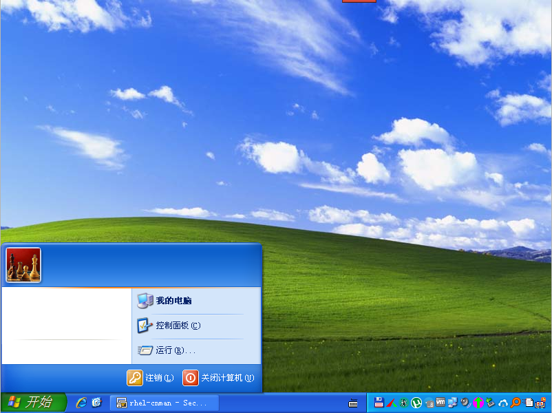
至此，可清理系统（clean.cmd）并关机整理磁盘（先Defragment files and consolidate free space，再Compact disk to reclaim unused space），备份WinXPCHS.vmdk。
@ECHO OFF
RD /S /Q C:\RECYCLER\
RD /S /Q D:\RECYCLER\
RD /S /Q E:\RECYCLER\
RD /S /Q F:\RECYCLER\
RD /S /Q C:\5c2faa6e87d3c38ef1844d2558\
RD /S /Q C:\6d9756859fce71541b07e64c85f2\
RD /S /Q C:\7d8926b9ac396c5809d092f7ddda\
RD /S /Q C:\13ff09e3ea27704aacc2d955\
RD /S /Q C:\15f23d6381b8c4affe80bc1d825e\
RD /S /Q C:\025d3d0b5c22f7cedfbe14\
RD /S /Q C:\98bbea133b005246f0\
RD /S /Q C:\0209f43858b85bb3ca8282\
RD /S /Q C:\447c90d3f297e05195e4ef19cd\
RD /S /Q C:\4145eb3e1cd2ef5552cf\
RD /S /Q C:\4837f2f3cbc78b7c65\
RD /S /Q C:\493306c0b61b195df2e9\
RD /S /Q C:\2100443a0add8903d07e\
RD /S /Q C:\a883dbaa515b70d345\
RD /S /Q C:\b5c0d1171852369b256de40c978b\
RD /S /Q C:\b4925f23229cb4008246c8dc66\
RD /S /Q C:\Config.Msi\
RD /S /Q C:\d83f14dbc60fae78ac\
RD /S /Q C:\IDE\
NET STOP wuauserv
RD /S /Q C:\WINDOWS\Debug\
RD /S /Q "C:\WINDOWS\Downloaded Program Files\"
MD "C:\WINDOWS\Downloaded Program Files\"
RD /S /Q C:\WINDOWS\prefetch\
MD C:\WINDOWS\prefetch\
RD /S /Q C:\WINDOWS\security\logs\
RD /S /Q C:\WINDOWS\SoftwareDistribution\DataStore\logs\
RD /S /Q C:\WINDOWS\SoftwareDistribution\Download\
RD /S /Q C:\WINDOWS\system32\wbem\Logs\
RD /S /Q C:\WINDOWS\Temp\
MD C:\WINDOWS\Temp\
DEL C:\WINDOWS\*.log
DEL C:\WINDOWS\Microsoft.NET\Framework\v2.0.50727\*.log
DEL C:\WINDOWS\Microsoft.NET\Framework\v4.0.30319\*.log
DEL C:\WINDOWS\OEWABLog.txt
DEL C:\WINDOWS\setuplog.txt
DEL C:\WINDOWS\SoftwareDistribution\*.log
DEL C:\WINDOWS\system32\CatRoot2\*.log
DEL C:\WINDOWS\system32\CatRoot2\dberr.txt
DEL C:\WINDOWS\system32\LogFiles\HTTPERR\*.log
DEL /A "C:\Documents and Settings\Administrator\Local Settings\Application Data\Microsoft\Windows\*.log"
DEL C:\WINDOWS\system32\FNTCACHE.DAT
DEL "C:\Documents and Settings\Administrator\Local Settings\Application Data\GDIPFONTCACHEV1.DAT"
DEL "C:\Documents and Settings\Administrator\Application Data\Microsoft\Internet Explorer\Quick Launch\启动 Internet Explorer 浏览器.lnk"
DEL "C:\Documents and Settings\Administrator\Application Data\Microsoft\Internet Explorer\Quick Launch\啟動 Internet Explorer 瀏覽器.lnk"
DEL "C:\Documents and Settings\All Users\桌面\Adobe Reader 9.lnk"
REM IDM 默认下载文件夹
RD /S /Q "C:\Documents and Settings\Administrator\My Documents\Downloads\"
REM Telegram 默认下载文件夹
RD /S /Q "C:\Documents and Settings\Administrator\My Documents\Telegram Desktop\"
RD /S /Q "C:\Documents and Settings\Administrator\Application Data\.oit\"
RD /S /Q "C:\Documents and Settings\Administrator\Application Data\Adobe\"
RD /S /Q "C:\Documents and Settings\Administrator\Application Data\DMCache\"
RD /S /Q "C:\Documents and Settings\Administrator\Application Data\Google\"
RD /S /Q "C:\Documents and Settings\Administrator\Application Data\Identities\"
RD /S /Q "C:\Documents and Settings\Administrator\Application Data\IDM\"
RD /S /Q "C:\Documents and Settings\Administrator\Application Data\ldoce5\"
RD /S /Q "C:\Documents and Settings\Administrator\Application Data\Macromedia\"
RD /S /Q "C:\Documents and Settings\Administrator\Application Data\MathWorks\"
RD /S /Q "C:\Documents and Settings\Administrator\Application Data\Microsoft\Office\Recent\"
RD /S /Q "C:\Documents and Settings\Administrator\Application Data\Mozilla\"
RD /S /Q "C:\Documents and Settings\Administrator\Application Data\MPC-HC\"
RD /S /Q "C:\Documents and Settings\Administrator\Application Data\oalecd8\"
RD /S /Q "C:\Documents and Settings\Administrator\Application Data\ocoll2e\"
RD /S /Q "C:\Documents and Settings\Administrator\Application Data\olt1\"
RD /S /Q "C:\Documents and Settings\Administrator\Application Data\Oxford Advanced Learner's Dictionary\"
RD /S /Q "C:\Documents and Settings\Administrator\Application Data\Oxford Essential 2th Edition\"
RD /S /Q "C:\Documents and Settings\Administrator\Application Data\Oxford Learner's Dictionary of Academic English\"
RD /S /Q "C:\Documents and Settings\Administrator\Application Data\Oxford Wordpower Dictionary\"
RD /S /Q "C:\Documents and Settings\Administrator\Application Data\Scooter Software\"
RD /S /Q "C:\Documents and Settings\Administrator\Application Data\Subversion\"
RD /S /Q "C:\Documents and Settings\Administrator\Application Data\Tencent\"
RD /S /Q "C:\Documents and Settings\Administrator\Application Data\Thunderbird\"
RD /S /Q "C:\Documents and Settings\Administrator\Application Data\WinRAR\"
RD /S /Q "C:\Documents and Settings\Administrator\Application Data\Wise Euask\"
RD /S /Q "C:\Documents and Settings\Administrator\Application Data\Wise Registry Cleaner\"
RD /S /Q "C:\Documents and Settings\Administrator\Application Data\Youdao\"
RD /S /Q "C:\Documents and Settings\Administrator\Cookies\"
RD /S /Q "C:\Documents and Settings\Administrator\Favorites\"
RD /S /Q "C:\Documents and Settings\Administrator\IECompatCache\"
RD /S /Q "C:\Documents and Settings\Administrator\IETldCache\"
RD /S /Q "C:\Documents and Settings\Administrator\Local Settings\History\"
RD /S /Q "C:\Documents and Settings\Administrator\Local Settings\Temp\"
RD /S /Q "C:\Documents and Settings\Administrator\Local Settings\Temporary Internet Files\"
RD /S /Q "C:\Documents and Settings\Administrator\NetHood\"
RD /S /Q "C:\Documents and Settings\Administrator\PrintHood\"
RD /S /Q "C:\Documents and Settings\Administrator\PrivacIE\"
RD /S /Q "C:\Documents and Settings\Administrator\Recent\"
RD /S /Q "C:\Documents and Settings\Administrator\SendTo\"
RD /S /Q "C:\Documents and Settings\Administrator\UserData\"
DEL /A "C:\Documents and Settings\Administrator\Local Settings\Application Data\fusioncache.dat"
DEL /A "C:\Documents and Settings\Administrator\Local Settings\Application Data\IconCache.db"
RD /S /Q "C:\Documents and Settings\Administrator\Local Settings\Application Data\Adobe\"
RD /S /Q "C:\Documents and Settings\Administrator\Local Settings\Application Data\ApplicationHistory\"
RD /S /Q "C:\Documents and Settings\Administrator\Local Settings\Application Data\Bitvise\"
RD /S /Q "C:\Documents and Settings\Administrator\Local Settings\Application Data\CEF\"
RD /S /Q "C:\Documents and Settings\Administrator\Local Settings\Application Data\GHISLER\"
RD /S /Q "C:\Documents and Settings\Administrator\Local Settings\Application Data\ldoce5\"
RD /S /Q "C:\Documents and Settings\Administrator\Local Settings\Application Data\MathWorks\"
RD /S /Q "C:\Documents and Settings\Administrator\Local Settings\Application Data\Microsoft Help\"
RD /S /Q "C:\Documents and Settings\Administrator\Local Settings\Application Data\Microsoft\"
RD /S /Q "C:\Documents and Settings\Administrator\Local Settings\Application Data\Mozilla\"
RD /S /Q "C:\Documents and Settings\Administrator\Local Settings\Application Data\oalecd8\"
RD /S /Q "C:\Documents and Settings\Administrator\Local Settings\Application Data\ocoll2e\"
RD /S /Q "C:\Documents and Settings\Administrator\Local Settings\Application Data\olt1\"
RD /S /Q "C:\Documents and Settings\Administrator\Local Settings\Application Data\Thunderbird\"
RD /S /Q "C:\Documents and Settings\Administrator\Local Settings\Application Data\Yodao\DeskDict\CrashRpt\"
RD /S /Q "C:\Documents and Settings\Administrator\Local Settings\Application Data\Yodao\DeskDict\dict.cache\"
RD /S /Q "C:\Documents and Settings\All Users\Application Data\Adobe\"
RD /S /Q "C:\Documents and Settings\All Users\Application Data\IDM\"
RD /S /Q "C:\Documents and Settings\All Users\Application Data\Tencent\"
RD /S /Q "C:\Documents and Settings\All Users\Application Data\VanDyke\"
RD /S /Q "C:\Documents and Settings\All Users\Application Data\Youdao\"
REM utorrent
RD /S /Q E:\VMware\utorrent\apps\
RD /S /Q E:\VMware\utorrent\dlimagecache\
REG DELETE "HKEY_LOCAL_MACHINE\SYSTEM\ControlSet001\Control\Keyboard Layouts\E0010804" /f
REG DELETE "HKEY_LOCAL_MACHINE\SYSTEM\ControlSet001\Control\Keyboard Layouts\E0020804" /f
REG DELETE "HKEY_LOCAL_MACHINE\SYSTEM\ControlSet001\Control\Keyboard Layouts\E0030804" /f
REG DELETE "HKEY_LOCAL_MACHINE\SYSTEM\ControlSet001\Control\Keyboard Layouts\E0040804" /f
REG DELETE "HKEY_LOCAL_MACHINE\SYSTEM\ControlSet001\Control\Keyboard Layouts\E0050804" /f
REG DELETE "HKEY_LOCAL_MACHINE\SYSTEM\ControlSet001\Control\Keyboard Layouts\E00E0804" /f
REG DELETE "HKEY_LOCAL_MACHINE\SYSTEM\ControlSet001\Control\Keyboard Layouts\E0200804" /f
REG DELETE "HKEY_LOCAL_MACHINE\SYSTEM\ControlSet001\Control\Keyboard Layouts\E0210804" /f
REG DELETE "HKEY_LOCAL_MACHINE\SYSTEM\ControlSet001\Control\Keyboard Layouts\E0010404" /f
REG DELETE "HKEY_LOCAL_MACHINE\SYSTEM\ControlSet001\Control\Keyboard Layouts\E0020404" /f
REG DELETE "HKEY_LOCAL_MACHINE\SYSTEM\ControlSet001\Control\Keyboard Layouts\E0030404" /f
REG DELETE "HKEY_LOCAL_MACHINE\SYSTEM\ControlSet001\Control\Keyboard Layouts\E0040404" /f
REG DELETE "HKEY_LOCAL_MACHINE\SYSTEM\ControlSet001\Control\Keyboard Layouts\E0050404" /f
REG DELETE "HKEY_LOCAL_MACHINE\SYSTEM\ControlSet001\Control\Keyboard Layouts\E0060404" /f
REG DELETE "HKEY_LOCAL_MACHINE\SYSTEM\ControlSet001\Control\Keyboard Layouts\E0070404" /f
REG DELETE "HKEY_LOCAL_MACHINE\SYSTEM\ControlSet001\Control\Keyboard Layouts\E0080404" /f
REG DELETE "HKEY_LOCAL_MACHINE\SYSTEM\ControlSet001\Control\Keyboard Layouts\E0090404" /f
REG DELETE "HKEY_LOCAL_MACHINE\SYSTEM\ControlSet001\Control\Keyboard Layouts\E00C0404" /f
REG DELETE "HKEY_LOCAL_MACHINE\SYSTEM\ControlSet001\Control\Keyboard Layouts\E00D0404" /f
REG DELETE "HKEY_LOCAL_MACHINE\SYSTEM\ControlSet001\Control\Keyboard Layouts\E00E0404" /f
REG DELETE "HKEY_LOCAL_MACHINE\SYSTEM\ControlSet001\Control\Keyboard Layouts\E00F0404" /f
REG DELETE "HKEY_LOCAL_MACHINE\SYSTEM\ControlSet001\Control\Keyboard Layouts\E01F0404" /f
REG DELETE "HKEY_LOCAL_MACHINE\SYSTEM\ControlSet002\Control\Keyboard Layouts\E0010804" /f
REG DELETE "HKEY_LOCAL_MACHINE\SYSTEM\ControlSet002\Control\Keyboard Layouts\E0020804" /f
REG DELETE "HKEY_LOCAL_MACHINE\SYSTEM\ControlSet002\Control\Keyboard Layouts\E0030804" /f
REG DELETE "HKEY_LOCAL_MACHINE\SYSTEM\ControlSet002\Control\Keyboard Layouts\E0040804" /f
REG DELETE "HKEY_LOCAL_MACHINE\SYSTEM\ControlSet002\Control\Keyboard Layouts\E0050804" /f
REG DELETE "HKEY_LOCAL_MACHINE\SYSTEM\ControlSet002\Control\Keyboard Layouts\E00E0804" /f
REG DELETE "HKEY_LOCAL_MACHINE\SYSTEM\ControlSet002\Control\Keyboard Layouts\E0200804" /f
REG DELETE "HKEY_LOCAL_MACHINE\SYSTEM\ControlSet002\Control\Keyboard Layouts\E0210804" /f
REG DELETE "HKEY_LOCAL_MACHINE\SYSTEM\ControlSet002\Control\Keyboard Layouts\E0010404" /f
REG DELETE "HKEY_LOCAL_MACHINE\SYSTEM\ControlSet002\Control\Keyboard Layouts\E0020404" /f
REG DELETE "HKEY_LOCAL_MACHINE\SYSTEM\ControlSet002\Control\Keyboard Layouts\E0030404" /f
REG DELETE "HKEY_LOCAL_MACHINE\SYSTEM\ControlSet002\Control\Keyboard Layouts\E0040404" /f
REG DELETE "HKEY_LOCAL_MACHINE\SYSTEM\ControlSet002\Control\Keyboard Layouts\E0050404" /f
REG DELETE "HKEY_LOCAL_MACHINE\SYSTEM\ControlSet002\Control\Keyboard Layouts\E0060404" /f
REG DELETE "HKEY_LOCAL_MACHINE\SYSTEM\ControlSet002\Control\Keyboard Layouts\E0070404" /f
REG DELETE "HKEY_LOCAL_MACHINE\SYSTEM\ControlSet002\Control\Keyboard Layouts\E0080404" /f
REG DELETE "HKEY_LOCAL_MACHINE\SYSTEM\ControlSet002\Control\Keyboard Layouts\E0090404" /f
REG DELETE "HKEY_LOCAL_MACHINE\SYSTEM\ControlSet002\Control\Keyboard Layouts\E00C0404" /f
REG DELETE "HKEY_LOCAL_MACHINE\SYSTEM\ControlSet002\Control\Keyboard Layouts\E00D0404" /f
REG DELETE "HKEY_LOCAL_MACHINE\SYSTEM\ControlSet002\Control\Keyboard Layouts\E00E0404" /f
REG DELETE "HKEY_LOCAL_MACHINE\SYSTEM\ControlSet002\Control\Keyboard Layouts\E00F0404" /f
REG DELETE "HKEY_LOCAL_MACHINE\SYSTEM\ControlSet002\Control\Keyboard Layouts\E01F0404" /f
REG DELETE "HKEY_LOCAL_MACHINE\SYSTEM\CurrentControlSet\Control\Keyboard Layouts\E0010804" /f
REG DELETE "HKEY_LOCAL_MACHINE\SYSTEM\CurrentControlSet\Control\Keyboard Layouts\E0020804" /f
REG DELETE "HKEY_LOCAL_MACHINE\SYSTEM\CurrentControlSet\Control\Keyboard Layouts\E0030804" /f
REG DELETE "HKEY_LOCAL_MACHINE\SYSTEM\CurrentControlSet\Control\Keyboard Layouts\E0040804" /f
REG DELETE "HKEY_LOCAL_MACHINE\SYSTEM\CurrentControlSet\Control\Keyboard Layouts\E0050804" /f
REG DELETE "HKEY_LOCAL_MACHINE\SYSTEM\CurrentControlSet\Control\Keyboard Layouts\E00E0804" /f
REG DELETE "HKEY_LOCAL_MACHINE\SYSTEM\CurrentControlSet\Control\Keyboard Layouts\E0200804" /f
REG DELETE "HKEY_LOCAL_MACHINE\SYSTEM\CurrentControlSet\Control\Keyboard Layouts\E0210804" /f
REG DELETE "HKEY_LOCAL_MACHINE\SYSTEM\CurrentControlSet\Control\Keyboard Layouts\E0010404" /f
REG DELETE "HKEY_LOCAL_MACHINE\SYSTEM\CurrentControlSet\Control\Keyboard Layouts\E0020404" /f
REG DELETE "HKEY_LOCAL_MACHINE\SYSTEM\CurrentControlSet\Control\Keyboard Layouts\E0030404" /f
REG DELETE "HKEY_LOCAL_MACHINE\SYSTEM\CurrentControlSet\Control\Keyboard Layouts\E0040404" /f
REG DELETE "HKEY_LOCAL_MACHINE\SYSTEM\CurrentControlSet\Control\Keyboard Layouts\E0050404" /f
REG DELETE "HKEY_LOCAL_MACHINE\SYSTEM\CurrentControlSet\Control\Keyboard Layouts\E0060404" /f
REG DELETE "HKEY_LOCAL_MACHINE\SYSTEM\CurrentControlSet\Control\Keyboard Layouts\E0070404" /f
REG DELETE "HKEY_LOCAL_MACHINE\SYSTEM\CurrentControlSet\Control\Keyboard Layouts\E0080404" /f
REG DELETE "HKEY_LOCAL_MACHINE\SYSTEM\CurrentControlSet\Control\Keyboard Layouts\E0090404" /f
REG DELETE "HKEY_LOCAL_MACHINE\SYSTEM\CurrentControlSet\Control\Keyboard Layouts\E00C0404" /f
REG DELETE "HKEY_LOCAL_MACHINE\SYSTEM\CurrentControlSet\Control\Keyboard Layouts\E00D0404" /f
REG DELETE "HKEY_LOCAL_MACHINE\SYSTEM\CurrentControlSet\Control\Keyboard Layouts\E00E0404" /f
REG DELETE "HKEY_LOCAL_MACHINE\SYSTEM\CurrentControlSet\Control\Keyboard Layouts\E00F0404" /f
REG DELETE "HKEY_LOCAL_MACHINE\SYSTEM\CurrentControlSet\Control\Keyboard Layouts\E01F0404" /f
REG DELETE "HKEY_CURRENT_USER\Keyboard Layout\Preload" /f
REG DELETE "HKEY_USERS\.DEFAULT\Keyboard Layout\Preload" /f
REG DELETE "HKEY_USERS\S-1-5-18\Keyboard Layout\Preload" /f
REG DELETE "HKEY_USERS\S-1-5-19\Keyboard Layout\Preload" /f
REG DELETE "HKEY_USERS\S-1-5-20\Keyboard Layout\Preload" /f
REG DELETE "HKEY_USERS\S-1-5-21-682003330-1770027372-1801674531-500\Keyboard Layout\Preload" /f
REG DELETE "HKEY_USERS\S-1-5-21-1957994488-2000478354-682003330-500\Keyboard Layout\Preload" /f
REG ADD "HKEY_CURRENT_USER\Software\Microsoft\CTF\TIP\{3FC47A08-E5C9-4BCA-A2C7-BC9A282AED14}\LanguageProfile\0x00000804\{F3BA9077-6C7E-11D4-97FA-0080C882687E}" /v Enable /t REG_DWORD /d 00000000 /f
REG ADD "HKEY_CURRENT_USER\Software\Microsoft\CTF\TIP\{3FC47A08-E5C9-4BCA-A2C7-BC9A282AED14}\LanguageProfile\0x00000804\{FA550B04-5AD7-411F-A5AC-CA038EC515D7}" /v Enable /t REG_DWORD /d 00000000 /f
REG ADD "HKEY_CURRENT_USER\Software\Microsoft\CTF\TIP\{241A9AFE-5045-43A8-9F86-1B5E3814095C}\LanguageProfile\0x00000404\{B2F9C502-1742-11D4-9790-0080C882687E}" /v Enable /t REG_DWORD /d 00000000 /f
REG ADD "HKEY_CURRENT_USER\Software\Microsoft\CTF\TIP\{241A9AFE-5045-43A8-9F86-1B5E3814095C}\LanguageProfile\0x00000404\{F3BA907A-6C7E-11D4-97FA-0080C882687E}" /v Enable /t REG_DWORD /d 00000000 /f
REG ADD "HKEY_CURRENT_USER\Software\Microsoft\CTF\TIP\{531FDEBF-9B4C-4A43-A2AA-960E8FCDC732}\LanguageProfile\0x00000404\{B2F9C502-1742-11D4-9790-0080C882687E}" /v Enable /t REG_DWORD /d 00000000 /f
REG ADD "HKEY_CURRENT_USER\Software\Microsoft\CTF\TIP\{766A2C15-B226-4FD6-B52A-867B3EBF38D2}\LanguageProfile\0x00000412\{83C18F16-5DD8-4157-A34A-3C5AB2089E11}" /v Enable /t REG_DWORD /d 00000000 /f
REG ADD "HKEY_CURRENT_USER\Software\Microsoft\CTF\TIP\{B3209488-CB34-4017-8E13-10CFCA2519FE}\LanguageProfile\0x00000411\{75E61AD7-8D9E-4436-A0BE-2098C0DDA2C1}" /v Enable /t REG_DWORD /d 00000000 /f
REG ADD "HKEY_CURRENT_USER\Software\Microsoft\CTF\TIP\{B3209488-CB34-4017-8E13-10CFCA2519FE}\LanguageProfile\0x00000411\{DAF93FA4-C39D-4AD8-BE61-16A1DFA3A1DA}" /v Enable /t REG_DWORD /d 00000000 /f
REG ADD "HKEY_CURRENT_USER\Software\Microsoft\CTF\TIP\{DCBD6FA8-032F-11D3-B5B1-00C04FC324A1}\LanguageProfile\0x00000404\{09EA4E4B-46CE-4469-B450-0DE76A435BBB}" /v Enable /t REG_DWORD /d 00000000 /f
REG ADD "HKEY_CURRENT_USER\Software\Microsoft\CTF\TIP\{DCBD6FA8-032F-11D3-B5B1-00C04FC324A1}\LanguageProfile\0x00000409\{09EA4E4B-46CE-4469-B450-0DE76A435BBB}" /v Enable /t REG_DWORD /d 00000000 /f
REG ADD "HKEY_CURRENT_USER\Software\Microsoft\CTF\TIP\{DCBD6FA8-032F-11D3-B5B1-00C04FC324A1}\LanguageProfile\0x00000411\{09EA4E4B-46CE-4469-B450-0DE76A435BBB}" /v Enable /t REG_DWORD /d 00000000 /f
REG ADD "HKEY_CURRENT_USER\Software\Microsoft\CTF\TIP\{DCBD6FA8-032F-11D3-B5B1-00C04FC324A1}\LanguageProfile\0x00000412\{09EA4E4B-46CE-4469-B450-0DE76A435BBB}" /v Enable /t REG_DWORD /d 00000000 /f
REG ADD "HKEY_CURRENT_USER\Software\Microsoft\CTF\TIP\{DCBD6FA8-032F-11D3-B5B1-00C04FC324A1}\LanguageProfile\0x00000804\{09EA4E4B-46CE-4469-B450-0DE76A435BBB}" /v Enable /t REG_DWORD /d 00000000 /f
REG ADD "HKEY_CURRENT_USER\Software\Microsoft\CTF\TIP\{F3BA9074-6C7E-11D4-97FA-0080C882687E}\LanguageProfile\0x00000804\{F3BA9077-6C7E-11D4-97FA-0080C882687E}" /v Enable /t REG_DWORD /d 00000000 /f
REG ADD "HKEY_CURRENT_USER\Software\Microsoft\CTF\TIP\{FA445657-9379-11D6-B41A-00065B83EE53}\LanguageProfile\0x00000404\{38445657-9381-11D6-B41A-00065B83EE53}" /v Enable /t REG_DWORD /d 00000000 /f
REG ADD "HKEY_CURRENT_USER\Software\Microsoft\CTF\TIP\{FA445657-9379-11D6-B41A-00065B83EE53}\LanguageProfile\0x00000409\{38445657-9381-11D6-B41A-00065B83EE53}" /v Enable /t REG_DWORD /d 00000000 /f
REG ADD "HKEY_CURRENT_USER\Software\Microsoft\CTF\TIP\{FA445657-9379-11D6-B41A-00065B83EE53}\LanguageProfile\0x00000411\{38445657-9381-11D6-B41A-00065B83EE53}" /v Enable /t REG_DWORD /d 00000000 /f
REG ADD "HKEY_CURRENT_USER\Software\Microsoft\CTF\TIP\{FA445657-9379-11D6-B41A-00065B83EE53}\LanguageProfile\0x00000412\{38445657-9381-11D6-B41A-00065B83EE53}" /v Enable /t REG_DWORD /d 00000000 /f
REG ADD "HKEY_CURRENT_USER\Software\Microsoft\CTF\TIP\{FA445657-9379-11D6-B41A-00065B83EE53}\LanguageProfile\0x00000804\{38445657-9381-11D6-B41A-00065B83EE53}" /v Enable /t REG_DWORD /d 00000000 /f
REG DELETE HKEY_CURRENT_USER\Software\Microsoft\Windows\CurrentVersion\Policies\Explorer /f
REG DELETE HKEY_USERS\.DEFAULT\Software\Microsoft\Windows\CurrentVersion\Policies\Explorer /f
REG DELETE HKEY_USERS\S-1-5-18\Software\Microsoft\Windows\CurrentVersion\Policies\Explorer /f
REG DELETE HKEY_USERS\S-1-5-19\Software\Microsoft\Windows\CurrentVersion\Policies\Explorer /f
REG DELETE HKEY_USERS\S-1-5-20\Software\Microsoft\Windows\CurrentVersion\Policies\Explorer /f
REG DELETE HKEY_USERS\S-1-5-21-682003330-1770027372-1801674531-500\Software\Microsoft\Windows\CurrentVersion\Policies\Explorer /f
REG DELETE HKEY_USERS\S-1-5-21-1957994488-2000478354-682003330-500\Software\Microsoft\Windows\CurrentVersion\Policies\Explorer /f
REG DELETE HKEY_CURRENT_USER\Software\Microsoft\Windows\CurrentVersion\Run /v IDMan /f
REG DELETE HKEY_LOCAL_MACHINE\SOFTWARE\Microsoft\Windows\CurrentVersion\Run /v "Adobe ARM" /f
REG DELETE HKEY_LOCAL_MACHINE\SOFTWARE\Microsoft\Windows\CurrentVersion\Run /v "Adobe Reader Speed Launcher" /f
REM BCSSync
REG DELETE HKEY_LOCAL_MACHINE\SOFTWARE\Microsoft\Windows\CurrentVersion\Run /v BCSSync /f
REM IMEKLMG
REG DELETE HKEY_LOCAL_MACHINE\SOFTWARE\Microsoft\Windows\CurrentVersion\Run /v "IME14 CHS Setup" /f
REG DELETE HKEY_LOCAL_MACHINE\SOFTWARE\Microsoft\Windows\CurrentVersion\Run /v "IME14 CHT Setup" /f
REM IMJPMIG
REG DELETE HKEY_LOCAL_MACHINE\SOFTWARE\Microsoft\Windows\CurrentVersion\Run /v IMJPMIG8.1 /f
REM TINTSETP
REG DELETE HKEY_LOCAL_MACHINE\SOFTWARE\Microsoft\Windows\CurrentVersion\Run /v PHIME2002A /f
REG DELETE HKEY_LOCAL_MACHINE\SOFTWARE\Microsoft\Windows\CurrentVersion\Run /v PHIME2002ASync /f
REG DELETE "HKEY_CURRENT_USER\Software\Microsoft\Internet Explorer\TypedURLs" /f
REG DELETE "HKEY_CURRENT_USER\Software\Microsoft\Search Assistant\ACMru" /f
REG DELETE HKEY_CURRENT_USER\Software\Microsoft\Windows\CurrentVersion\Explorer\ComDlg32 /f
REG DELETE HKEY_CURRENT_USER\Software\Microsoft\Windows\CurrentVersion\Explorer\ComputerDescriptions /f
REG DELETE HKEY_CURRENT_USER\Software\Microsoft\Windows\CurrentVersion\Explorer\RecentDocs /f
REG DELETE HKEY_CURRENT_USER\Software\Microsoft\Windows\CurrentVersion\Explorer\RunMRU /f
REG DELETE HKEY_CURRENT_USER\Software\Microsoft\Windows\CurrentVersion\Explorer\StartPage /v ProgramsCache /f
REG DELETE HKEY_CURRENT_USER\Software\Microsoft\Windows\CurrentVersion\Explorer\TrayNotify /v IconStreams /f
REG DELETE HKEY_CURRENT_USER\Software\Microsoft\Windows\CurrentVersion\Explorer\TrayNotify /v PastIconsStream /f
REG DELETE HKEY_CURRENT_USER\Software\Microsoft\Windows\CurrentVersion\Explorer\UserAssist /f
REG DELETE HKEY_CURRENT_USER\Software\Microsoft\Windows\ShellNoRoam\MUICache /f
REG DELETE HKEY_LOCAL_MACHINE\Software\Microsoft\Direct3D\MostRecentApplication /f
REG DELETE HKEY_LOCAL_MACHINE\Software\Microsoft\DirectDraw\MostRecentApplication /f
REG DELETE "HKEY_CURRENT_USER\SOFTWARE\Classes\Local Settings\Software\Microsoft\Windows\Shell\BagMRU" /f
REG DELETE "HKEY_CURRENT_USER\SOFTWARE\Classes\Local Settings\Software\Microsoft\Windows\Shell\Bags" /f
REG DELETE "HKEY_CURRENT_USER\SOFTWARE\Classes\Wow6432Node\Local Settings\Software\Microsoft\Windows\Shell\BagMRU" /f
REG DELETE "HKEY_CURRENT_USER\SOFTWARE\Classes\Wow6432Node\Local Settings\Software\Microsoft\Windows\Shell\Bags" /f
REG DELETE HKEY_CURRENT_USER\SOFTWARE\Microsoft\Windows\CurrentVersion\Explorer\Modules\GlobalSettings\Sizer /f
REG DELETE HKEY_CURRENT_USER\SOFTWARE\Microsoft\Windows\Shell\BagMRU /f
REG DELETE HKEY_CURRENT_USER\SOFTWARE\Microsoft\Windows\Shell\Bags /f
REG DELETE HKEY_CURRENT_USER\SOFTWARE\Microsoft\Windows\ShellNoRoam\BagMRU /f
REG DELETE HKEY_CURRENT_USER\SOFTWARE\Microsoft\Windows\ShellNoRoam\Bags /f
REG ADD "HKEY_CURRENT_USER\Software\Microsoft\Internet Explorer\Main" /v StatusBarOther /t REG_DWORD /d 1 /f
REG ADD HKEY_CURRENT_USER\Software\Microsoft\Windows\CurrentVersion\Explorer\Streams /v Settings /t REG_BINARY /d 08000000040000000000000000777E137335CF11AE6908002B2E1262040000001000000043000000 /f
REG DELETE "HKEY_CURRENT_USER\Software\Microsoft\Office\14.0\Access\File MRU" /f
REG DELETE "HKEY_CURRENT_USER\Software\Microsoft\Office\14.0\Access\Place MRU" /f
REG DELETE "HKEY_CURRENT_USER\Software\Microsoft\Office\14.0\Excel\File MRU" /f
REG DELETE "HKEY_CURRENT_USER\Software\Microsoft\Office\14.0\Excel\Place MRU" /f
REG DELETE "HKEY_CURRENT_USER\Software\Microsoft\Office\14.0\OneNote\File MRU" /f
REG DELETE "HKEY_CURRENT_USER\Software\Microsoft\Office\14.0\OneNote\Place MRU" /f
REG DELETE "HKEY_CURRENT_USER\Software\Microsoft\Office\14.0\Outlook\File MRU" /f
REG DELETE "HKEY_CURRENT_USER\Software\Microsoft\Office\14.0\Outlook\Place MRU" /f
REG DELETE "HKEY_CURRENT_USER\Software\Microsoft\Office\14.0\PowerPoint\File MRU" /f
REG DELETE "HKEY_CURRENT_USER\Software\Microsoft\Office\14.0\PowerPoint\Place MRU" /f
REG DELETE "HKEY_CURRENT_USER\Software\Microsoft\Office\14.0\Word\File MRU" /f
REG DELETE "HKEY_CURRENT_USER\Software\Microsoft\Office\14.0\Word\Place MRU" /f
REG DELETE "HKEY_CURRENT_USER\Software\Adobe\Acrobat Reader\9.0\AVGeneral\cRecentFiles" /f
REG DELETE "HKEY_CURRENT_USER\Software\Adobe\Adobe ARM\1.0\ARM" /v tLastT_Reader /f
@FOR /f "tokens=2*" %%i in ('REG QUERY HKEY_USERS\.DEFAULT\Software\Microsoft\Windows\CurrentVersion\ThemeManager /v LastUserLangID 2^>Nul') DO SET LangID=%%j
IF %LangID% == 2052 GOTO zh_CN
IF %LangID% == 1028 GOTO zh_TW
:zh_CN
REG ADD "HKEY_CURRENT_USER\Keyboard Layout\Preload" /v 1 /t REG_SZ /d 00000804 /f
REG ADD "HKEY_CURRENT_USER\Keyboard Layout\Preload" /v 2 /t REG_SZ /d E0250804 /f
REG ADD "HKEY_CURRENT_USER\Keyboard Layout\Preload" /v 3 /t REG_SZ /d E0240804 /f
REG ADD "HKEY_CURRENT_USER\Keyboard Layout\Preload" /v 4 /t REG_SZ /d E0230804 /f
REG ADD "HKEY_CURRENT_USER\Keyboard Layout\Preload" /v 5 /t REG_SZ /d E0220804 /f
GOTO :END
:zh_TW
REG ADD "HKEY_CURRENT_USER\Keyboard Layout\Preload" /v 1 /t REG_SZ /d 00000404 /f
REG ADD "HKEY_CURRENT_USER\Keyboard Layout\Preload" /v 2 /t REG_SZ /d E0210404 /f
REG ADD "HKEY_CURRENT_USER\Keyboard Layout\Preload" /v 3 /t REG_SZ /d E0200404 /f
GOTO :END
:END
PAUSE
10.1、解压updroots.zip到E:\PathFile\
10.2、解压wget-1.19.4-win32.zip到E:\PathFile\Wget\
https://eternallybored.org/misc/wget/releases/old/wget-1.19.4-win32.zip
10.3、安装7-Zip到E:\PathFile\
https://www.7-zip.org/a/7z2201.exe
10.4、解压nircmd.zip到E:\PathFile\NirCmd\
https://www.nirsoft.net/utils/nircmd.zip
用于开机时启动一批命令行软件（如Unbound、DNSCrypt等）和常用软件（如Total Commander、Everything等），不用在系统注册表中留自动启动数据。
用法可参考startup.cmd
@ECHO OFF
IPCONFIG /FLUSHDNS
REM START DNSCrypt
nircmd exec2 hide "E:\VMware\localdns\dnscrypt-proxy\" "E:\VMware\localdns\dnscrypt-proxy\dnscrypt-proxy.exe" doh.opendns.com-443.conf
nircmd exec2 hide "E:\VMware\localdns\dnscrypt-proxy\" "E:\VMware\localdns\dnscrypt-proxy\dnscrypt-proxy.exe" doh.opendns.com-53.conf
nircmd exec2 hide "E:\VMware\localdns\dnscrypt-proxy\" "E:\VMware\localdns\dnscrypt-proxy\dnscrypt-proxy.exe" doh.opendns.com-5353.conf
REM START Unbound
nircmd exec2 hide "E:\VMware\localdns\unbound\" "E:\VMware\localdns\unbound\unbound.exe" -c unbound.conf
REM START ICalClk
nircmd exec2 hide "E:\VMware\ICalClk\" "E:\VMware\ICalClk\ICalClk.exe"
REM START ACID
nircmd exec2 hide "C:\Program Files\Alcohol Soft\Alcohol 120\" "C:\Program Files\Alcohol Soft\Alcohol 120\ACID.exe" -s -c
REM START Bitvise SSH Client
nircmd exec2 hide "E:\VMware\Bitvise SSH Client\" "E:\VMware\Bitvise SSH Client\BvSsh.exe" -profile="E:\VMware\Bitvise SSH Client\Profile\169.229.226.25.tlp" -loginOnStartup
REM START TrayApp
nircmd exec2 hide "E:\VMware\TrayApp\" "E:\VMware\TrayApp\TrayApp.exe"
REM START FlashPad
nircmd exec2 hide "E:\VMware\FlashPad\" "E:\VMware\FlashPad\FlashPad.exe"
REM START Total Commander
nircmd exec2 hide "E:\VMware\TotalCommander\" "E:\VMware\TotalCommander\TOTALCMD.EXE" /O /L=C:\ /R=E:\VMware\
REM START YoudaoDict
rem nircmd exec2 hide "E:\VMware\YoudaoDict\" "E:\VMware\YoudaoDict\YodaoDict.exe"
REM START WeaselServer
nircmd exec2 hide "E:\VMware\Rime\Weasel\" "E:\VMware\Rime\Weasel\WeaselServer.exe"
REM START Polipo
nircmd exec2 hide "E:\VMware\polipo\" "E:\VMware\polipo\polipo.exe" -c polipo.conf
gpg -v --import E:\VMware\key.asc
nircmd exec2 hide "E:\VMware\MATLAB\FlexNet\" "E:\VMware\MATLAB\FlexNet\lmgrd.exe" -c E:\GitHub\notes\MATLAB\licenses\R2022a_B67F36942F33.dat -l license.log
nircmd exec2 hide "E:\VMware\Everything\" "E:\VMware\Everything\Everything.exe"
10.5、解压support.cab（提取自WindowsXP-KB838079-SupportTools-ENU.exe）到E:\PathFile\KB838079\
https://cnman.github.io/uploads/support.cab
10.6、其他如FFmpeg、Git、GnuPG、Java、MPlayer、Python27、Python34等命令行软件均安装到E:\PathFile\，方便添加到系统Path里面。
以下软件均安装/解压到E:\VMware\，尽量使用官方Portable版本。
11.1、安装Beyond Compare 4
注册信息保存在BC4Key.txt中，恢复系统不用重新注册。
11.2、安装Bitvise SSH Client
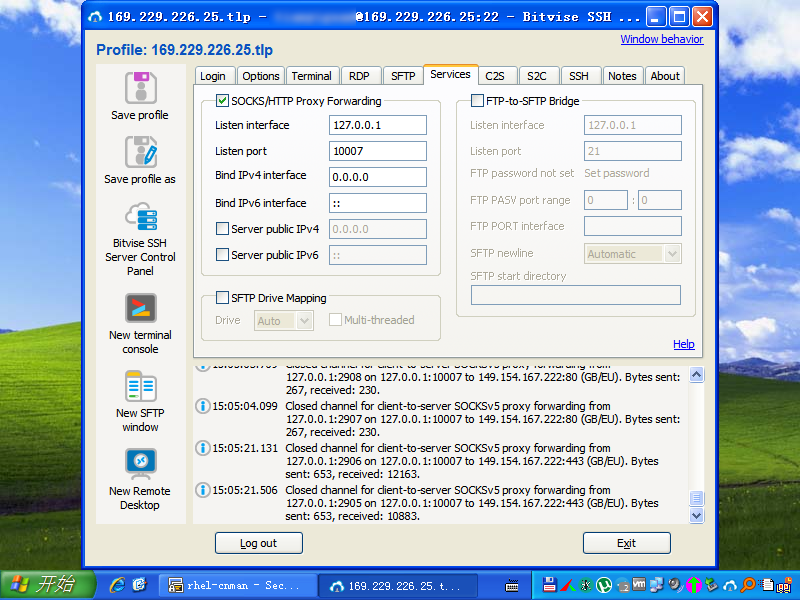
11.3、安装CHB Renamer
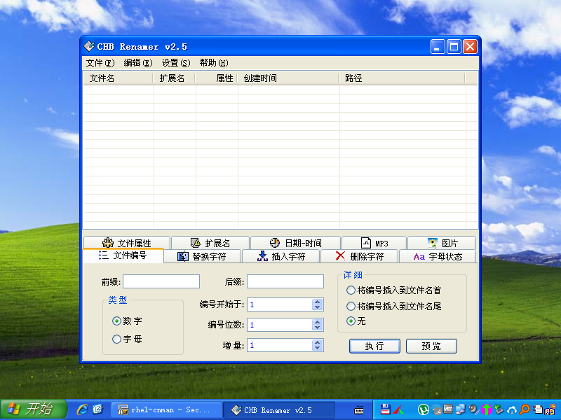
11.4、安装EditPlus 5.2 build 2281
注册信息保存在reg_u.ini中，恢复系统不用重新注册。
11.5、安装EmEditor 14.8.1
注册信息保存在eeLM.ini中，恢复系统不用重新注册。
11.6、安装Everything
11.7、安装Firefox ESR 52.9.0
https://ftp.mozilla.org/pub/firefox/releases/52.9.0esr/win32/zh-CN/Firefox Setup 52.9.0esr.exe
新建E:\VMware\firefoxprofile\文件夹备用
11.8、安装FlashFXP
11.9、安装FlashPad
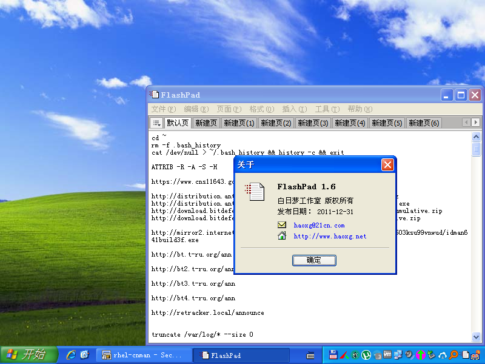
11.10、安装foobar2000 1.5.11
11.11、安装FastStone Capture
注册信息保存在fsc.db中，恢复系统不用重新注册。
11.12、安装Internet Download Manager
11.13、安装IrfanView
11.14、安装lessmsi
11.15、安装MDict
11.16、安装MPC-HC
11.17、安装NirLauncher Package
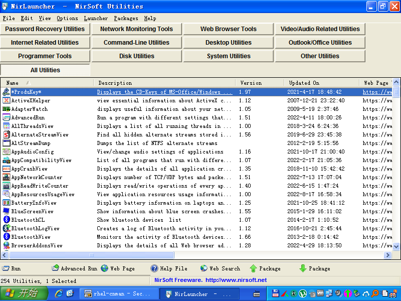
11.18、安装PDFPatcher
11.19、安装polipo
polipo.conf示例，把Bitvise SSH Client开在10007端口的Socks5代理转为开在8123端口的Http代理：
logSyslog = true
logFile = polipo.log
proxyAddress = 0.0.0.0
proxyPort = 8123
socksParentProxy = 127.0.0.1:10007
socksProxyType = socks5
allowedPorts = 1-65535
tunnelAllowedPorts = 1-65535
11.20、安装小狼毫输入法
新建E:\VMware\Rime\data\文件夹备用
11.21、安装Telegram
https://github.com/telegramdesktop/tdesktop/releases/download/v1.8.15/tportable.1.8.15.zip
11.22、安装Thunderbird
https://ftp.mozilla.org/pub/thunderbird/releases/52.9.1/win32/zh-CN/Thunderbird Setup 52.9.1.exe
新建E:\VMware\thunderbirdprofile\文件夹备用
11.23、安装Total Commander
注册信息保存在wincmd.key中，恢复系统不用重新注册。
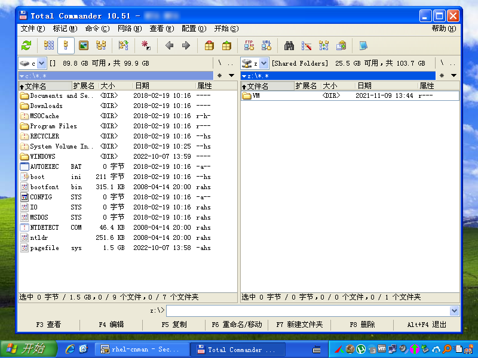
11.24、安装TrayApp
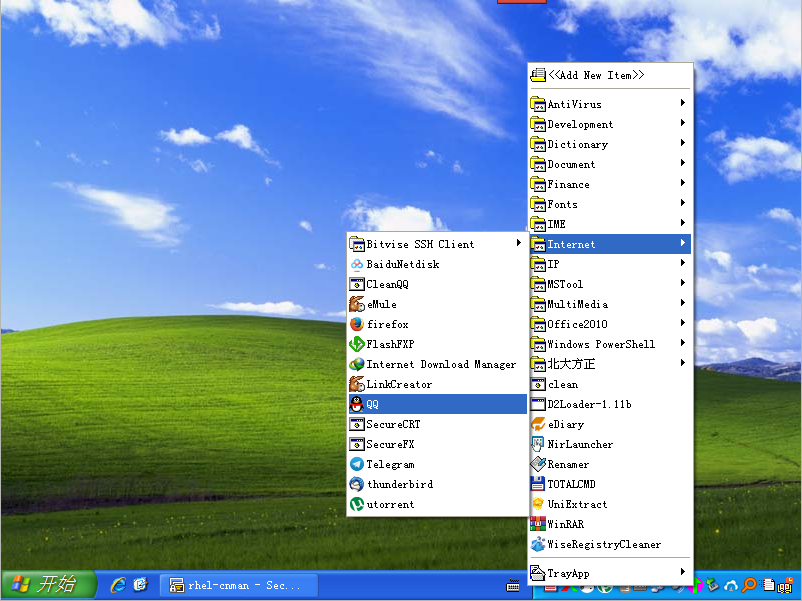
11.25、安装UltraISO
注册信息保存在uikey.ini中，恢复系统不用重新注册。
11.26、安装UniExtract
11.27、安装µTorrent
11.28、安装SecureCRT/SecureFX 7.3.7
注册信息保存在SecureCRT.lic、SecureFX.lic中，恢复系统不用重新注册。
11.29、安装WinRAR 6.02
注册信息保存在RarReg.key中，恢复系统不用重新注册。
11.30、安装Wise Registry Cleaner
11.31、安装XnView
11.32、安装王码五笔大一统2018
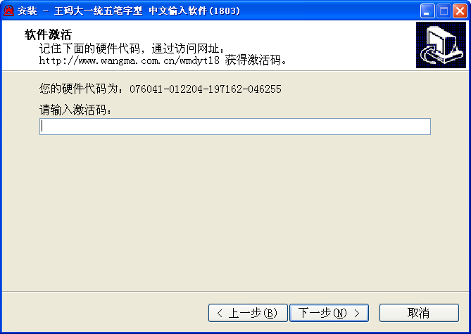
复制C:\WINDOWS\system32\文件夹中的wangmaimefz.dll、wm6jp_p.ime、wmwb18.ime到E:\VMware\wangma\wmwb18\备用。
11.32、安装谷歌拼音输入法
3.0.1.98，用于偶尔打点英文:)
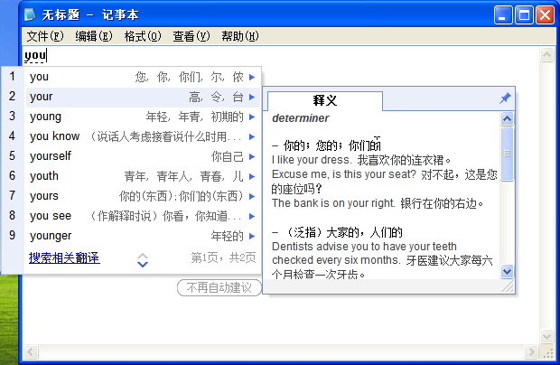
复制C:\WINDOWS\system32\文件夹中的GooglePinyin3.ime、GooglePinyin3EnRes.dll、GooglePinyin3ZhRes.dll到E:\VMware\Google\Google Pinyin 3\备用。
启动TrayApp，右键点击通知栏图标，把已安装软件的可执行文件拖到里面。
部分可从C:\Documents and Settings\All Users\「开始」菜单\程序\和C:\Documents and Settings\Administrator\「开始」菜单\程序\中复制到E:\VMware\TrayApp\TrayApp\
打开E:\VMware\TrayApp\TrayApp\，分别创建新文件夹（如Document、Internet等），分类快捷方式，设置一些软件的启动参数。
Firefox：E:\VMware\firefox\firefox.exe -profile "E:\VMware\firefoxprofile"
Thunderbird：E:\VMware\Thunderbird\thunderbird.exe -profile "E:\VMware\thunderbirdprofile"
WiseRegistryCleaner：E:\VMware\WiseRegistryCleaner\WiseRegCleaner.exe -a -all
12、其他软件可参考：
http://armandocaussade.org/computing/winxp_latest.txt
https://retrosystemsrevival.blogspot.com/p/final-versions-of-working-software-on.html
https://msfn.org/board/topic/176299-latest-version-of-software-running-on-xp/
关机，删掉WinXPCHS.vmdk，恢复备份的WinXPCHS.vmdk
开机
启动TrayApp
TrayApp中启动TotalCommander
初始化系统：init.cmd
@ECHO OFF
MD C:\Downloads\
MD "C:\Documents and Settings\Administrator\Local Settings\Application Data\pip\"
COPY E:\GitHub\notes\pip.ini "C:\Documents and Settings\Administrator\Local Settings\Application Data\pip\pip.ini" /y
COPY E:\VMware\Rime\Weasel\weasel.dll C:\WINDOWS\system32\weasel.dll /y
COPY E:\VMware\Rime\Weasel\weasel.ime C:\WINDOWS\system32\weasel.ime /y
COPY E:\VMware\Rime\Weasel\weaselt.dll C:\WINDOWS\system32\weaselt.dll /y
COPY E:\VMware\Rime\Weasel\weaselt.ime C:\WINDOWS\system32\weaselt.ime /y
MD "C:\Documents and Settings\Administrator\Application Data\wangma\wmwb18\"
COPY E:\GitHub\notes\wmwb18.ini "C:\Documents and Settings\Administrator\Application Data\wangma\wmwb18\wmwb18.ini" /y
COPY E:\VMware\wangma\wmwb18\wangmaimefz.dll C:\WINDOWS\system32\wangmaimefz.dll /y
COPY E:\VMware\wangma\wmwb18\wm6jp_p.ime C:\WINDOWS\system32\wm6jp_p.ime /y
COPY E:\VMware\wangma\wmwb18\wmwb18.ime C:\WINDOWS\system32\wmwb18.ime /y
COPY E:\VMware\freeime\freeime.ime C:\WINDOWS\system32\freeime.ime /y
COPY "E:\VMware\Google\Google Pinyin 3\GooglePinyin3.ime" C:\WINDOWS\system32\GooglePinyin3.ime /y
COPY "E:\VMware\Google\Google Pinyin 3\GooglePinyin3EnRes.dll" C:\WINDOWS\system32\GooglePinyin3EnRes.dll /y
COPY "E:\VMware\Google\Google Pinyin 3\GooglePinyin3ZhRes.dll" C:\WINDOWS\system32\GooglePinyin3ZhRes.dll /y
COPY E:\VMware\startup.cmd "C:\Documents and Settings\Administrator\「开始」菜单\程序\启动\startup.cmd" /y
COPY E:\VMware\startup.cmd "C:\Documents and Settings\Administrator\「開始」功能表\程式集\啟動\startup.cmd" /y
COPY E:\VMware\startup.cmd "C:\Documents and Settings\Administrator\Start Menu\Programs\Startup\startup.cmd" /y
CD /D "C:\Program Files\Microsoft Office\Office14\"
CSCRIPT OSPP.VBS /osppsvcrestart
CSCRIPT OSPP.VBS /INPKEY:VYBBJ-TRJPB-QFQRF-QFT4D-H3GVB
CSCRIPT OSPP.VBS /SETHST:kms.luochenzhimu.com
CSCRIPT OSPP.VBS /ACT
CD /D E:\PathFile\updroots\
updroots -l -u disallowedcert.sst
updroots authroots.sst
updroots updroots.sst
updroots -l roots.sst
updroots -d delroots.sst
CD /D E:\PathFile\KB838079\
SETX Path "C:\WINDOWS\system32;C:\WINDOWS;C:\WINDOWS\system32\wbem;C:\WINDOWS\system32\WindowsPowerShell\v1.0;E:\PathFile;E:\PathFile\7-Zip;E:\PathFile\PGPCommandLine;E:\PathFile\GnuPG\bin;E:\PathFile\Java\jre7\bin;E:\PathFile\KB838079;E:\PathFile\NirCmd;E:\PathFile\Python27;E:\PathFile\Python27\Scripts;E:\PathFile\Wget;E:\PathFile\Git\bin;E:\PathFile\Git\usr\bin" -m
CD /D E:\PathFile\PGPCommandLine\
pgp --license-authorize --license-number DUELR-FFABH-DR3WR-7ZCW5-GZL9Y-TZA
COPY E:\PathFile\PGPCommandLine\randseed.rnd "C:\Documents and Settings\Administrator\Application Data\PGP Corporation\PGP\randseed.rnd" /y
MD "C:\Documents and Settings\Administrator\My Documents\PGP\"
COPY E:\PathFile\PGPCommandLine\pubring.pkr "C:\Documents and Settings\Administrator\My Documents\PGP\pubring.pkr" /y
COPY E:\PathFile\PGPCommandLine\secring.skr "C:\Documents and Settings\Administrator\My Documents\PGP\secring.skr" /y
CD /D "E:\VMware\Internet Download Manager\"
idmbroker.exe -RegServer
idman.exe /rtr /onsilentsetup
REGSVR32 /S downlWithIDM.dll
REGSVR32 /S IDMGetAll.dll
REGSVR32 /S IDMIECC.dll
CD /D E:\PathFile\7-Zip\
7z x E:\GitHub\notes\github.cnman.ssh.zip -o"C:\Documents and Settings\Administrator\" -y
7z x E:\GitHub\notes\gnupg.zip -o"C:\Documents and Settings\Administrator\Application Data\" -y
7z x E:\Fonts\FZ\FZ_GB18030-2005.7z -oC:\WINDOWS\Fonts\ -y
7z x E:\Fonts\ST.zip -oC:\WINDOWS\Fonts\ -y
COPY E:\Fonts\Plangothic\PlangothicP2-Regular.ttf C:\WINDOWS\Fonts\PlangothicP2-Regular.ttf /y
EXPLORER C:\WINDOWS\Fonts\
REG IMPORT E:\GitHub\notes\XP_Init\Alcohol.reg
REG IMPORT E:\GitHub\notes\XP_Init\Configuration.reg
REG IMPORT E:\GitHub\notes\XP_Init\FinePrint9.reg
REG IMPORT E:\GitHub\notes\XP_Init\pdfFactory6.reg
REG IMPORT E:\GitHub\notes\XP_Init\PowerShell.reg
REG IMPORT E:\GitHub\notes\XP_Init\WiseCare365.reg
REG IMPORT E:\GitHub\notes\XP_Init\XnView.reg
@FOR /f "tokens=2*" %%i in ('REG QUERY HKEY_USERS\.DEFAULT\Software\Microsoft\Windows\CurrentVersion\ThemeManager /v LastUserLangID 2^>Nul') DO SET LangID=%%j
IF %LangID% == 2052 GOTO zh_CN
IF %LangID% == 1028 GOTO zh_TW
:zh_CN
netsh interface ip set address name="本地连接" static 192.168.0.185 255.255.255.0 192.168.0.1 0
netsh interface ip set dns name="本地连接" static 8.8.8.8 primary
REG ADD "HKEY_LOCAL_MACHINE\SYSTEM\CurrentControlSet\Services\Tcpip\Parameters\Interfaces\{650CE113-29D4-4AF0-B877-4A5B0911FB25}" /v NameServer /t REG_SZ /d 127.0.0.1 /f
IPCONFIG /ALL
REG IMPORT E:\GitHub\notes\XP_Init\ClearType_CHS.reg
REG IMPORT E:\GitHub\notes\XP_Init\IDM_CHS.reg
REG IMPORT E:\GitHub\notes\XP_Init\IME_CHS.reg
REG IMPORT E:\GitHub\notes\XP_Init\Oxford_CHS.reg
GOTO :END
:zh_TW
netsh interface ip set address name="區域連線" static 192.168.0.185 255.255.255.0 192.168.0.1 0
netsh interface ip set dns name="區域連線" static 8.8.8.8 primary
REG ADD "HKEY_LOCAL_MACHINE\SYSTEM\CurrentControlSet\Services\Tcpip\Parameters\Interfaces\{34D96218-8A2C-400D-B559-478FE601463E}" /v NameServer /t REG_SZ /d 127.0.0.1 /f
IPCONFIG /ALL
REG IMPORT E:\GitHub\notes\XP_Init\ClearType_TW.reg
REG IMPORT E:\GitHub\notes\XP_Init\IDM_TW.reg
REG IMPORT E:\GitHub\notes\XP_Init\IME_TW.reg
REG IMPORT E:\GitHub\notes\XP_Init\Oxford_TW.reg
GOTO :END
:END
PAUSE
绿化小狼毫输入法：rime.reg、rime.cmd
Windows Registry Editor Version 5.00
[HKEY_CURRENT_USER\Software\Rime]
[HKEY_CURRENT_USER\Software\Rime\Weasel]
"Hant"=dword:00000000
"RimeUserDir"="E:\\VMware\\Rime\\data\\"
[HKEY_CURRENT_USER\Software\Rime\Weasel\Updates]
"DidRunOnce"="0"
[HKEY_LOCAL_MACHINE\SYSTEM\CurrentControlSet\Control\Keyboard Layouts\E0220804]
"Ime File"="WEASEL.IME"
"Layout File"="kbdus.dll"
"Layout Text"="小狼毫输入法"
@ECHO OFF
CD /D "E:\VMware\Rime\Weasel\"
WeaselDeployer /deploy
绿化王码五笔大一统2018：wmwb.reg
RegCode适用硬件代码076041-012204-197162-046255，不知道这个硬件代码和什么硬件有关系
Windows Registry Editor Version 5.00
[HKEY_LOCAL_MACHINE\SOFTWARE\WangMa]
[HKEY_LOCAL_MACHINE\SOFTWARE\WangMa\wmwb18]
"path"="E:\\VMware\\wangma\\wmwb18"
"RegCode"="228074-103004-022169-152193-140183-175119"
"Uninstall"="E:\\VMware\\wangma\\wmwb18\\unins000.exe"
[HKEY_LOCAL_MACHINE\SYSTEM\CurrentControlSet\Control\Keyboard Layouts\E0230804]
"Ime File"="WMWB18.IME"
"Layout File"="kbdus.dll"
"Layout Text"="王码五笔字型"
绿化极点五笔：jdwb.reg
Windows Registry Editor Version 5.00
[HKEY_LOCAL_MACHINE\SYSTEM\CurrentControlSet\Control\Keyboard Layouts\E0240804]
"Ime File"="freeime.ime"
"Layout File"="kbdus.dll"
"Layout Text"="极点五笔纪念版"
"system"="E:\\VMware\\freeime"
绿化谷歌拼音输入法：ggpy.reg
Windows Registry Editor Version 5.00
[HKEY_LOCAL_MACHINE\SOFTWARE\Google]
[HKEY_LOCAL_MACHINE\SOFTWARE\Google\Google Pinyin 3]
"GUID"="EDAA4E4CC5D548AEB94D20E413DC74BE"
"OEM"=dword:00000000
"BrandCode"="GGPY"
"InstallTime"=dword:00000000
"PATH"="E:\\VMware\\Google\\Google Pinyin 3"
"DataPath"="E:\\VMware\\Google\\Google Pinyin 3"
"Experience"=dword:00000000
"SendHpsFlag"=dword:00000000
"HpsFlag"=dword:00000000
[HKEY_LOCAL_MACHINE\SOFTWARE\Google\Google Pinyin 3\Autoupdate]
"InstalledVersion"="3.0.1.98"
[HKEY_LOCAL_MACHINE\SYSTEM\CurrentControlSet\Control\Keyboard Layouts\E0250804]
"Ime File"="GOOGLEPINYIN3.IME"
"Layout File"="kbdus.dll"
"Layout Text"="谷歌拼音输入法"
绿化IDM：IDM_CHS.reg
Windows Registry Editor Version 5.00
[HKEY_CURRENT_USER\Software\DownloadManager]
"FName"="CN"
"LName"="Man"
"Email"="CNMan@github.com"
"Serial"="XXXXX-XXXXX-XXXXX-XXXXX"
"EnableDriver"=dword:00000000
"LaunchOnStart"=dword:00000000
"radxcnt"=dword:00000003
"LargeButtons"=dword:00000000
"LanguageID"=dword:00000804
"LIDwa"=dword:00000001
"rshext"=dword:00000001
"ToolbarStyle"="3D Style"
"TipTimeStamp"="Sat Jan 01 00:00:00 2000"
"TipStartUp"=dword:00000001
"TipFilePos"=dword:0000012c
"RunIEMonitor"=dword:00000000
"bSetServerTimeToFile"=dword:00000001
"bVistaAdvInt"=dword:00000001
"LocalPathW"=hex(0):43,00,3a,00,5c,00,44,00,6f,00,77,00,6e,00,6c,00,6f,00,61,\
00,64,00,73,00,00,00
[HKEY_CURRENT_USER\Software\DownloadManager\FoldersTree]
[HKEY_CURRENT_USER\Software\DownloadManager\FoldersTree\Compressed]
"pathW"=hex(0):43,00,3a,00,5c,00,44,00,6f,00,77,00,6e,00,6c,00,6f,00,61,00,64,\
00,73,00,00,00
[HKEY_CURRENT_USER\Software\DownloadManager\FoldersTree\Documents]
"pathW"=hex(0):43,00,3a,00,5c,00,44,00,6f,00,77,00,6e,00,6c,00,6f,00,61,00,64,\
00,73,00,00,00
[HKEY_CURRENT_USER\Software\DownloadManager\FoldersTree\Music]
"pathW"=hex(0):43,00,3a,00,5c,00,44,00,6f,00,77,00,6e,00,6c,00,6f,00,61,00,64,\
00,73,00,00,00
[HKEY_CURRENT_USER\Software\DownloadManager\FoldersTree\Programs]
"pathW"=hex(0):43,00,3a,00,5c,00,44,00,6f,00,77,00,6e,00,6c,00,6f,00,61,00,64,\
00,73,00,00,00
[HKEY_CURRENT_USER\Software\DownloadManager\FoldersTree\Video]
"pathW"=hex(0):43,00,3a,00,5c,00,44,00,6f,00,77,00,6e,00,6c,00,6f,00,61,00,64,\
00,73,00,00,00
[HKEY_CURRENT_USER\Software\DownloadManager\ConfigTime]
@=dword:62f4dae8
[HKEY_CURRENT_USER\Software\DownloadManager\IDMBI]
"int"=dword:00000000
[HKEY_CURRENT_USER\Software\DownloadManager\IDMBI\chrome]
"int"=dword:00000000
[HKEY_CURRENT_USER\Software\DownloadManager\IDMBI\Firefox]
"int"=dword:00000000
[HKEY_CURRENT_USER\Software\DownloadManager\IDMBI\IEXPLORE]
"int"=dword:00000000
[HKEY_CURRENT_USER\Software\DownloadManager\IDMBI\msedge]
"int"=dword:00000000
[HKEY_CURRENT_USER\Software\DownloadManager\IDMBI\OPERA]
"int"=dword:00000000
[HKEY_CURRENT_USER\Software\DownloadManager\IDMBI\Safari]
"int"=dword:00000000
[HKEY_CURRENT_USER\Software\DownloadManager\netApps]
"00002action"="turn_off"
导入部分软件的注册信息：如FinePrint9.reg、pdfFactory6.reg、XnView.reg等
Windows Registry Editor Version 5.00
[HKEY_LOCAL_MACHINE\SOFTWARE\FinePrint Software\FinePrint9]
"RegNum"="CRY2-L77M-Z27M"
[HKEY_CURRENT_USER\Software\FinePrint Software\FinePrint9]
"RegNum"="CRY2-L77M-Z27M"
Windows Registry Editor Version 5.00
[HKEY_LOCAL_MACHINE\SOFTWARE\FinePrint Software\pdfFactory6]
"RegNum"="MJYQ-J6GY-GG2G"
[HKEY_CURRENT_USER\Software\FinePrint Software\pdfFactory6]
"RegNum"="MJYQ-J6GY-GG2G"
Windows Registry Editor Version 5.00
[HKEY_LOCAL_MACHINE\SOFTWARE\XnView]
"LicenseName"="CNMan"
"LicenseNumber"="2472831462"
清理系统：TrayApp中启动clean.cmd
清理注册表：TrayApp中启动WiseRegCleaner
重启，让系统变量生效
更新系统证书：rootsupd.cmd（相比updroots.zip中的，增加了wget更新检测）
@ECHO OFF
CD /D E:\PathFile\updroots\
wget -N --no-if-modified-since http://www.download.windowsupdate.com/msdownload/update/v3/static/trustedr/en/authroots.sst
wget -N --no-if-modified-since http://www.download.windowsupdate.com/msdownload/update/v3/static/trustedr/en/delroots.sst
wget -N --no-if-modified-since http://www.download.windowsupdate.com/msdownload/update/v3/static/trustedr/en/disallowedcert.sst
wget -N --no-if-modified-since http://www.download.windowsupdate.com/msdownload/update/v3/static/trustedr/en/roots.sst
wget -N --no-if-modified-since http://www.download.windowsupdate.com/msdownload/update/v3/static/trustedr/en/updroots.sst
updroots -l -u disallowedcert.sst
updroots authroots.sst
updroots updroots.sst
updroots -l roots.sst
updroots -d delroots.sst
PAUSE
每次关机前都清理系统、清理注册表，关机后都整理磁盘（Compact disk to reclaim unused space）
下载个WinPE备用，用于替换系统字体等操作
https://www.hirensbootcd.org/files/Hirens.BootCD.9.9.zip
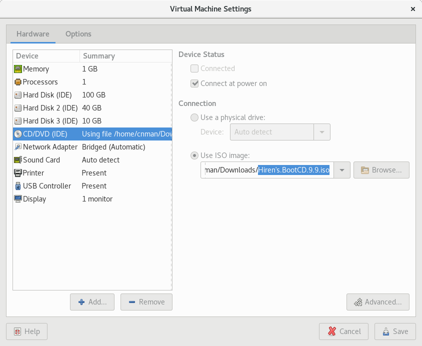
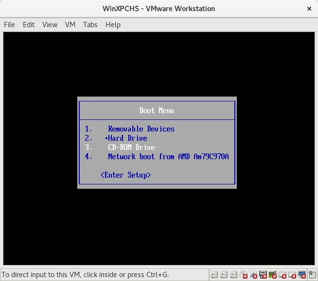
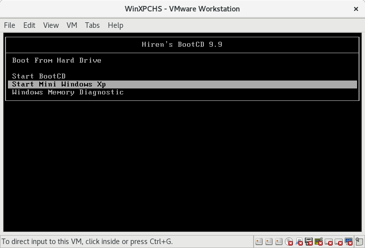
资料备份：
| C:\WINDOWS\Microsoft.NET\Framework\v1.1.4322\mscorcfg.msc | .NET Configuration 1.1 |
| C:\WINDOWS\system32\certmgr.msc | 证书 |
| C:\WINDOWS\system32\ciadv.msc | 索引服务 |
| C:\WINDOWS\system32\Com\comexp.msc | 组件服务 |
| C:\WINDOWS\system32\compmgmt.msc | 计算机管理 |
| C:\WINDOWS\system32\devmgmt.msc | 设备管理器 |
| C:\WINDOWS\system32\dfrg.msc | 磁盘碎片整理程序 |
| C:\WINDOWS\system32\diskmgmt.msc | 磁盘管理 |
| C:\WINDOWS\system32\eventvwr.msc | 事件查看器 |
| C:\WINDOWS\system32\fsmgmt.msc | 共享文件夹 |
| C:\WINDOWS\system32\gpedit.msc | 组策略 |
| C:\WINDOWS\system32\lusrmgr.msc | 本地用户和组 |
| C:\WINDOWS\system32\ntmsmgr.msc | 可移动存储 |
| C:\WINDOWS\system32\ntmsoprq.msc | 可移动存储管理员操作请求 |
| C:\WINDOWS\system32\perfmon.msc | 性能 |
| C:\WINDOWS\system32\rsop.msc | 策略的结果集 |
| C:\WINDOWS\system32\secpol.msc | 本地安全设置 |
| C:\WINDOWS\system32\services.msc | 服务 |
| C:\WINDOWS\system32\wmimgmt.msc | Windows 管理体系结构（WMI） |
https://admx.help/HKCU/Software/Microsoft/Windows/CurrentVersion/Policies/Explorer
https://admx.help/HKLM/Software/Microsoft/Windows/CurrentVersion/Policies/Explorer
WindowsXP相关设置对应的注册表位置
组策略对应于注册表位置汇总
https://gist.github.com/emonkak/1807634
Windows XP系统注册表十则设置技巧